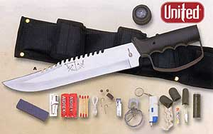

Featured Member Video
How To Use Various Fire StartersMore Videos by crashdive123
View larger or ask the author a question.
View all wilderness survival videos
Recent Forum Posts 
| Thread Title | Replies |
| Lost in the jungle at night | 7 |
| Chinese Fishing Lures on Ebay | 1 |
| So, how ‘bout that carona virus? | 310 |
| New washing machine!? | 6 |
| Hi | 2 |
| What are you cooking today and how? | 2283 |
| I'm Pretty Proud... | 28 |
| Pet hair | 31 |
| Hey everyone | 1 |
| Which skateboard should be the best... | 18 |
Come Join the Discussion Today!
Our site has been mentioned in:
U.S. News and World Report
Best of the Web - Site of the Week 8/6/01
Discovery Channel Canada
One Week in the Wilderness
USA Today
Hot Sites 08/08/2005
SEASHORES
Search planes or ships do not always spot a drifting raft or swimmer. You may have to land along the coast before being rescued. Surviving along the seashore is different from open sea survival. Food and water are more abundant and shelter is obviously easier to locate and construct.
If you are in friendly territory and decide to travel, it is better to move along the coast than to go inland. Do not leave the coast except to avoid obstacles (swamps and cliffs) or unless you find a trail that you know leads to human habitation.
In time of war, remember that the enemy patrols most coastlines. These patrols may cause problems for you if you land on a hostile shore. You will have extremely limited travel options in this situation. Avoid all contact with other humans, and make every effort to cover all tracks you leave on the shore.
Special Health Hazards
Coral, poisonous and aggressive fish, crocodiles, sea urchins, sea biscuits, sponges, anemones, and tides and undertow pose special health hazards.
Coral
Coral, dead or alive, can inflict painful cuts. There are hundreds of water hazards that can cause deep puncture wounds, severe bleeding, and the danger of infection. Clean all coral cuts thoroughly. Do not use iodine to disinfect any coral cuts. Some coral polyps feed on iodine and may grow inside your flesh if you use iodine.
Poisonous Fish
Many reef fish have toxic flesh. For some species, the flesh is always poisonous, for other species, only at certain times of the year. The poisons are present in all parts of the fish, but especially in the liver, intestines, and eggs.
Fish toxins are water soluble--no amount of cooking will neutralize them. They are tasteless, therefore the standard edibility tests are use-less. Birds are least susceptible to the poisons. Therefore, do not think that because a bird can eat a fish, it is a safe species for you to eat.
The toxins will produce a numbness of the lips, tongue, toes, and tips of the fingers, severe itching, and a clear reversal of temperature sensations. Cold items appear hot and hot items cold. There will probably also be nausea, vomiting, loss of speech, dizziness, and a paralysis that eventually brings death.
In addition to fish with poisonous flesh, there are those that are dangerous to touch. Many stingrays have a poisonous barb in their tail. There are also species that can deliver an electric shock. Some reef fish, such as stonefish and toadfish, have venomous spines that can cause very painful although seldom fatal injuries. The venom from these spines causes a burning sensation or even an agonizing pain that is out of proportion to the apparent severity of the wound. Jellyfish, while not usually fatal, can inflict a very painful sting if it touches you with its tentacles. See Chapter 11 and Appendix F for details on particularly dangerous fish of the sea and seashore.
Aggressive Fish
You should also avoid some ferocious fish. The bold and inquisitive barracuda has attacked men wearing shiny objects. It may charge lights or shiny objects at night. The sea bass, which can grow to 1.7 meters, is another fish to avoid. The moray eel, which has many sharp teeth and grows to 1.5 meters, can also be aggressive if disturbed.
Sea Snakes
Sea snakes are venomous and sometimes found in mid ocean. They are unlikely to bite unless provoked. Avoid them.
Crocodiles
Crocodiles inhabit tropical saltwater bays and mangrove-bordered estuaries and range up to 65 kilometers into the open sea. Few remain near inhabited areas. You commonly find crocodiles in the remote areas of the East Indies and Southeast Asia. Consider specimens over 1 meter long dangerous, especially females guarding their nests. Crocodile meat is an excellent source of food when available.
Sea Urchins, Sea Biscuits, Sponges, and Anemones
These animals can cause extreme, though seldom fatal, pain. Usually found in tropical shallow water near coral formations, sea urchins resemble small, round porcupines. If stepped on, they slip fine needles of lime or silica into the skin, where they break off and fester. If possible, remove the spines and treat the injury for infection. The other animals mentioned inflict injury similarly.
Tides and Undertow
These are another hazard to contend with. If caught in a large wave's undertow, push off the bottom or swim to the surface and proceed shoreward in a trough between waves. Do not fight against the pull of the undertow. Swim with it or perpendicular to it until it loses strength, then swim for shore.
Food
Obtaining food along a seashore should not present a problem. There are many types of seaweed and other plants you can easily find and eat. See Chapter 9 and Appendix B for a discussion of these plants.
There is a great variety of animal life that can supply your need for food in this type of survival situation.
Mollusks
Mussels, limpets, clams, sea snails, octopuses, squids, and sea slugs are all edible. Shellfish will usually supply most of the protein eaten by coastal survivors. Avoid the blue-ringed octopus and cone shells (described in Chapter 11 and Appendix F). Also beware of "red tides" that make mollusks poisonous. Apply the edibility test on each species before eating.
Worms
Coastal worms are generally edible, but it is better to use them for fish bait. Avoid bristle worms that look like fuzzy caterpillars. Also avoid tubeworms that have sharp-edged tubes. Arrowworms, alias amphioxus, are not true worms. You find them in the sand and are excellent either fresh or dried.
Crabs, Lobsters, and Barnacles
These animals are seldom dangerous to man and are an excellent food source. The pincers of larger crabs or lobsters can crush a man's finger. Many species have spines on their shells, making it preferable to wear gloves when catching them. Barnacles can cause scrapes or cuts and are difficult to detach from their anchor, but the larger species are an excellent food source.
Sea Urchins
These are common and can cause painful injuries when stepped on or touched. They are also a good source of food. Handle them with gloves, and remove all spines.
Sea Cucumbers
This animal is an important food source in the Indo-Pacific regions. Use them whole after evisceration or remove the five muscular strips that run the length of its body. Eat them smoked, pickled, or cooked.
| Ultimate Survival Knife & Kit  |
List Price: 61.99 Our Price: 39.95 |
This 15 inch survival knife with drop point blade features a thick quality stainless steel blade with serrated top edge. Textured and ribbed solid metal handle and guard. Nylon sheath. Survival kit includes a hollow grip with a compass top to store items within the knife itself, as well as additional pouches on the sheath to hold the rest. Complete survival kit. Click Here to Buy the Survival Knife Now. |
|